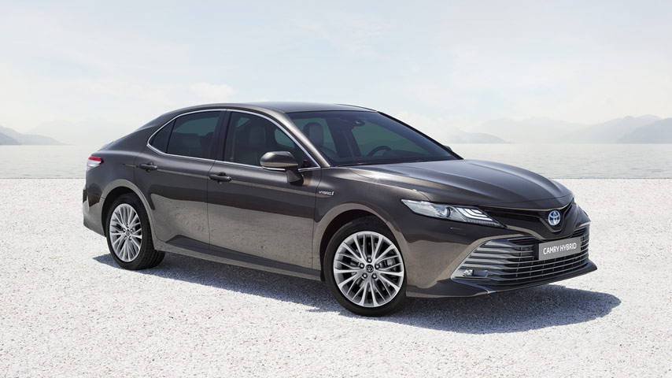
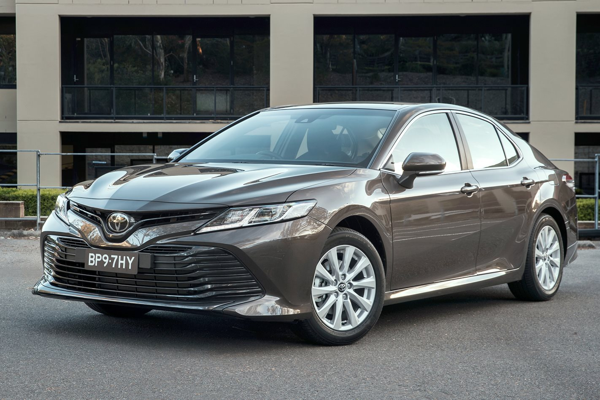
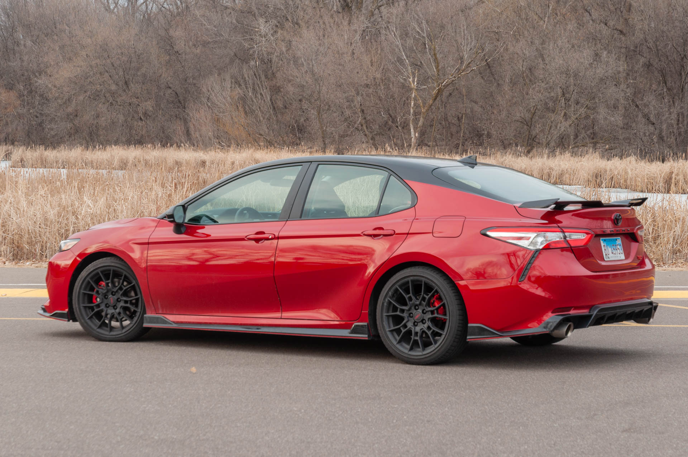
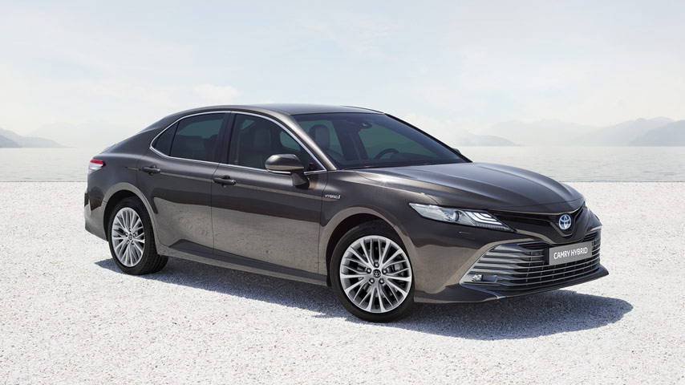
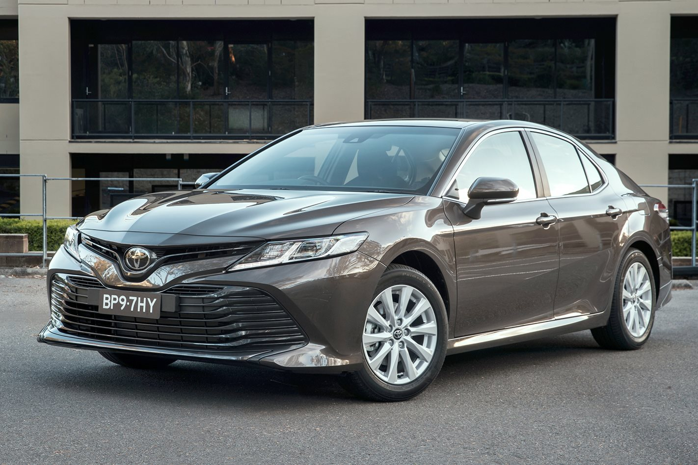
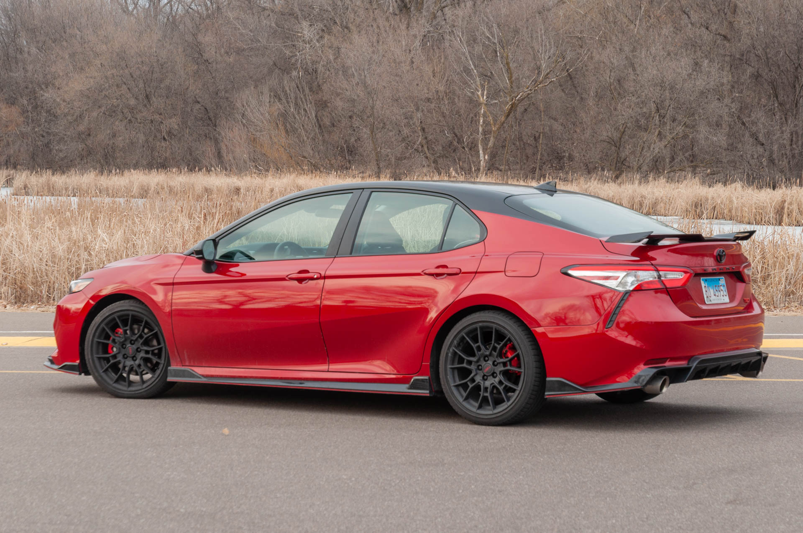

Price: R300 000
The Toyota Camry is an automobile sold internationally by the Japanese manufacturer Toyota since 1982, spanning multiple generations. Originally compact in size (narrow-body), later Camry models have grown to fit the mid-size classification (wide-body)—although the two sizes co-existed in the 1990s. Since the release of the wide-bodied versions, Camry has been extolled by Toyota as the firm's second "world car" after the Corolla. In Japan, Camry was once exclusive to Toyota Corolla Store retail dealerships. Narrow-body cars also spawned a rebadged sibling in Japan, the Toyota Vista also introduced in 1982 and sold at Toyota Vista Store locations.
But now the Camry’s back - a new saloon in an ocean of crossovers, in a segment that’s not getting any bigger, not expanding. And from a company that only recently killed off its slightly smaller Avensis saloon because not enough people were buying it.